Omnifex · 试做和题源案例
Omnifex 案例
基准仿照 SWE-bench：从开源硬件仓库的真实修订里取“改前状态 + 需求 + 上游答案”，让 agent 在原生 KiCad / CAD 文件上完成需求，再用自动检查判分。试做案例按实际顺序展开题目、模型提交、自动检查和复核；新题源案例说明版本变化与待验证的条件。配图包含原生文件渲染和按证据绘制的示意图。
判分本身会出错6 例
A 批 15 道里有 10 道的检查要修。误判有两个方向：太严会拒掉合理解，太松会放过错误解。题面本身也会写错。
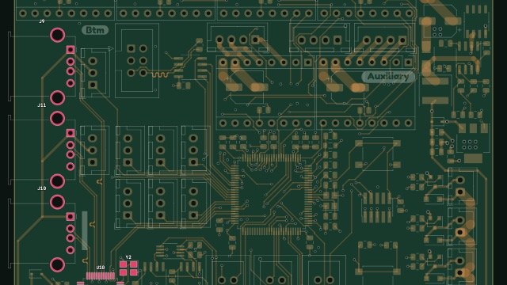
d1249e67LumenPnP Rev04：检查放行了错解LumenPnP 贴片机（opulo-inc/lumenpnp）
PCB检查放行了错误解初判 24/24，补检查后 22/24
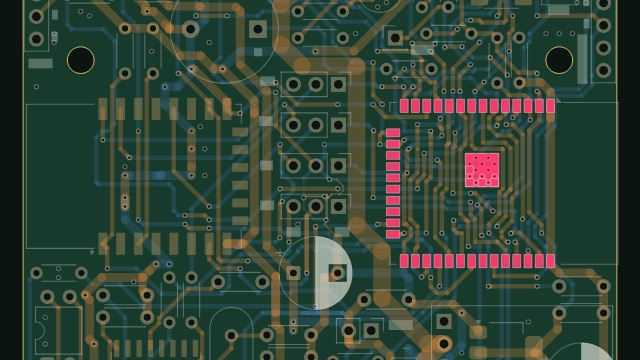
84e9e621OnStep 控制板：先误拒，又改封装JUWEI-17 赤道仪 OnStep 控制板（satakagi/OnStep-JUWEI-17）
PCB检查误拒改了标准封装

b336996dPocketPD 主板：关键字撞名，分压接反PocketPD 口袋电源（CentyLab/PocketPD_HW）
PCB外壳固件检查有 bug初判 44/56
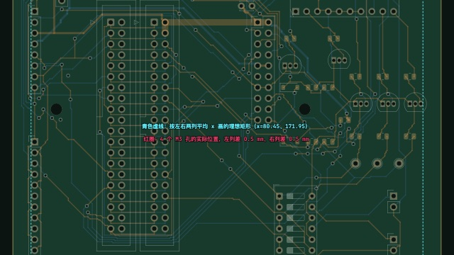
56d529b5漫游车 Brain Board：题面方向写错NASA JPL Open Source Rover（nasa-jpl/open-source-rover）
PCB题面有错初判 16/18
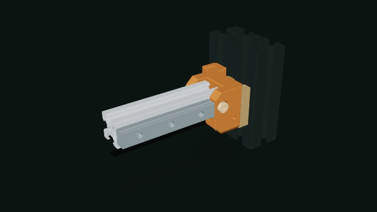
4916b729X 轴改双电机：基线认错带轮LH Stinger 打印机（lhndo/LH-Stinger）
CAD检查有误，修后通过初判 15/16
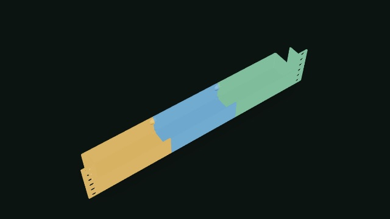
ca263473补全 19 英寸机架机箱：切片切在孔轴上SBC Case Builder（hominoids/SBC_Case_Builder）
CAD初判 19/23修检查后通过
模型真做不到的4 例
修好检查后仍失败的几道里，最典型的三类：整板布线、板与外壳的空间关系、缩板。
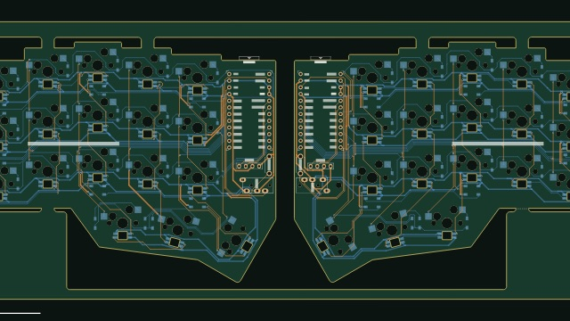
489f2861Corne v3 升 v4：整板没布通Corne 分体键盘（foostan/crkbd）
PCB没布通初判 19/25
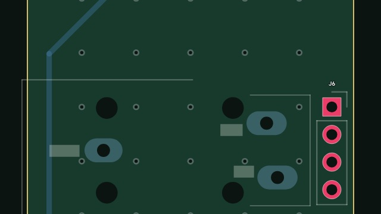
2e5d5574Daisy Seed 效果器：连接器放错面，还削了封装吉他效果器 1590A（torvalds/1590A）
PCB外壳真错初判 55/56
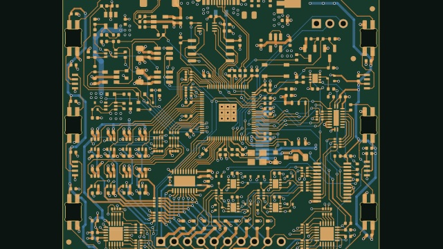
171ca2efBus Pirate 7 缩板：布局挤死，129 处没布通Bus Pirate 7（DangerousPrototypes/BusPirate5-hardware）
PCB没布通初判 14/17
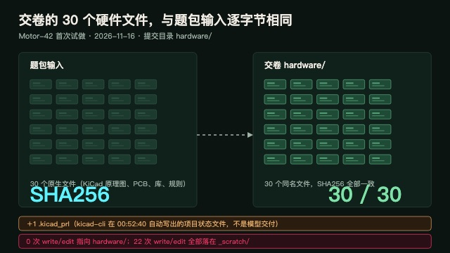
motor42Motor-42 加双编码器：675 步没改一个硬件文件稚晖君 Dummy 机械臂 · Motor-42（peng-zhihui/Dummy-Robot）
PCB未交付0 分
第二轮的新问题6 例
11-12 第二轮试做里最能说明问题的几道：检查全过但审计推翻、检查误判却另有真错、复核员判错、工作区泄题。
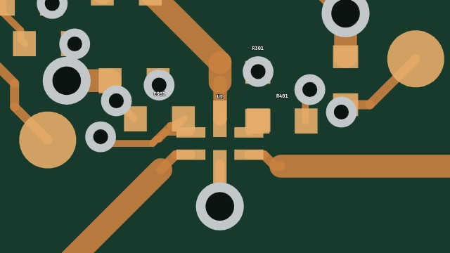
585e69a5HackRF 换射频开关：焊盘叠在一起HackRF One（greatscottgadgets/hackrf）
PCB审计判误收检查 10/10 全过
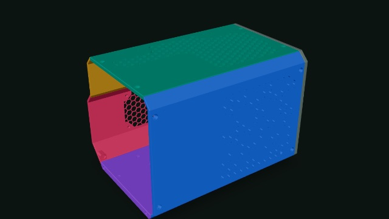
af7ff2beEbox 拆块：M3 螺丝装不进LH Stinger 打印机（lhndo/LH-Stinger）
CAD检查全过，审计推翻9/9 必需检查
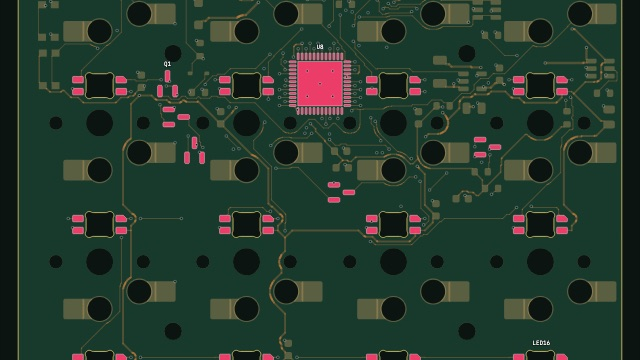
21dd5861Kobold 宏键盘：误拒三条，漏掉灯接错Kobold（tzarc/keyboards）
PCB误拒 3 条漏判：灯接错
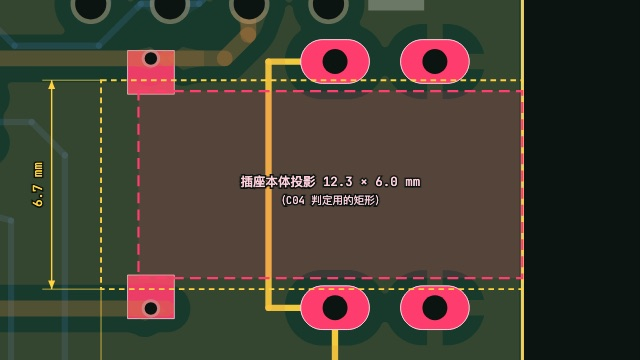
af817cc6Corne 换 TRS：缺口被填平Corne 分体键盘（foostan/crkbd）
PCB外壳插座装不上复核被推翻
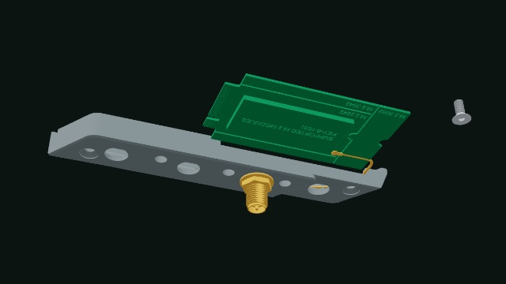
3e9a8a34Flipper One 天线：检查全过，4 处功能问题Flipper One 机械（flipperdevices/flipperone-mechanics）
CAD检查全过，审计推翻检查先误判
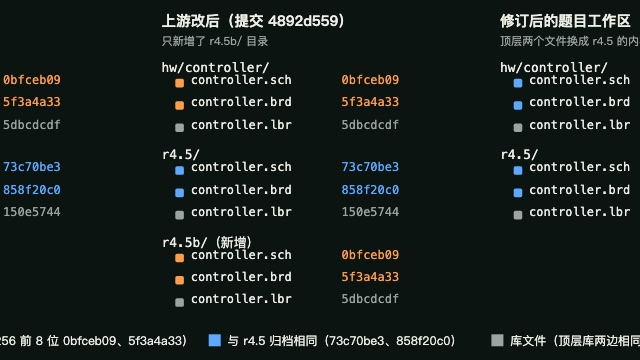
4892d559moteus r4.5b：答案藏在改前里moteus 控制板（mjbots/moteus）
PCB工作区泄题已修，待重跑
还没造题的新题源7 例
来自稚晖君仓库和专有格式重筛，都还没加工成题。这里写的是它们为什么值得做。

peak-4Peak 充电电路的电源路径稚晖君 Peak（peng-zhihui/Peak）
PCB无上游答案位号对不上
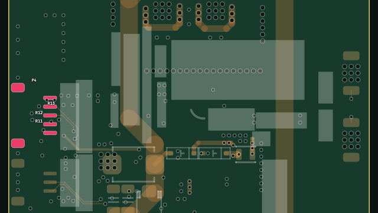
8d76bd3fDummy 42 驱动板加双编码器稚晖君 Dummy 机械臂（peng-zhihui/Dummy-Robot）
PCB有上游答案位号重排
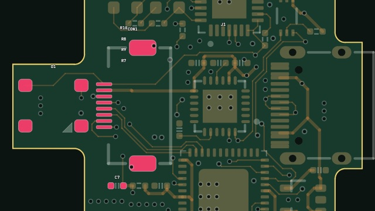
31d91345HoloCubic 为 Steam 外壳改板稚晖君 HoloCubic（peng-zhihui/HoloCubic）
PCB外壳有上游答案外壳未核实
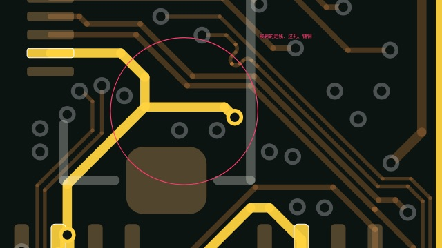
a1fa04b7ElectronBot 多余的 VBUS_IN 走线稚晖君 ElectronBot（peng-zhihui/ElectronBot）
PCB有上游答案已在铜皮层核实
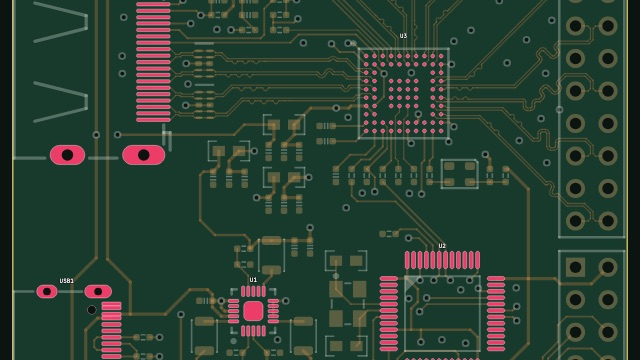
hdmi-pi-ylj2000HDMI-PI ylj2000 原理图与 PCB 不同步稚晖君 HDMI-PI（peng-zhihui/HDMI-PI）
PCB现成半成品高速：范围标记
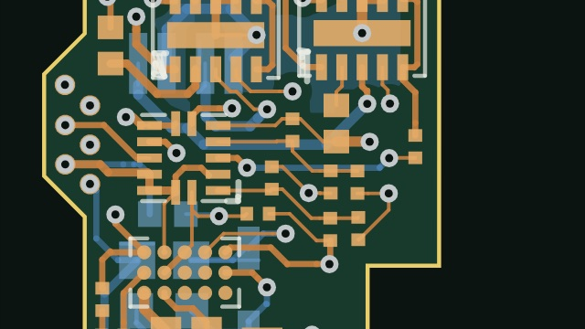
4bf05d77Miniscope 双色版：板跟着模块改Miniscope v4 双色版（Aharoni-Lab/Miniscope-v4）
PCBCAD新题源，尚未造题上游答案现成
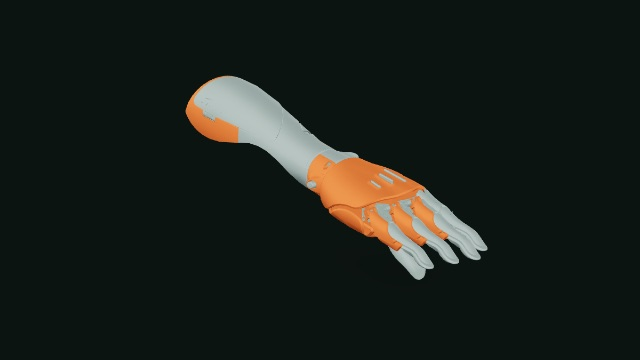
d0342ffdHACKberry 义手：修掉局部干涉HACKberry 义手（mission-arm/HACKberry）
CAD装配新题源，尚未造题局部干涉已复算